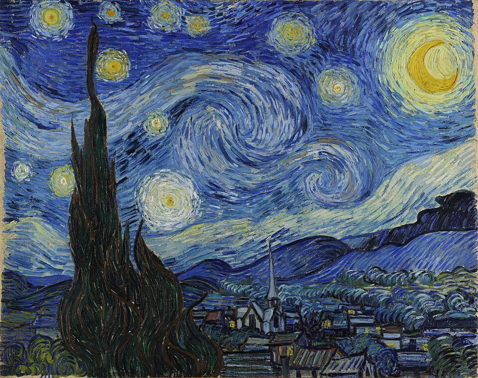
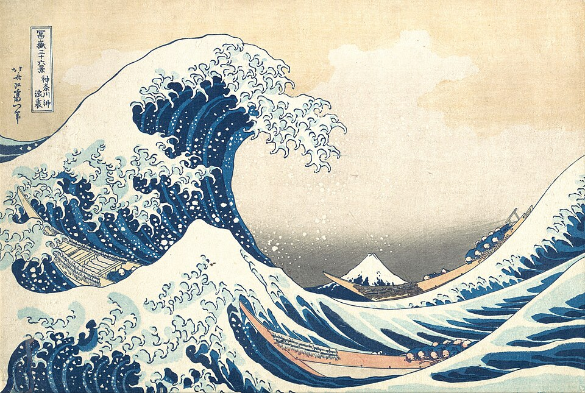
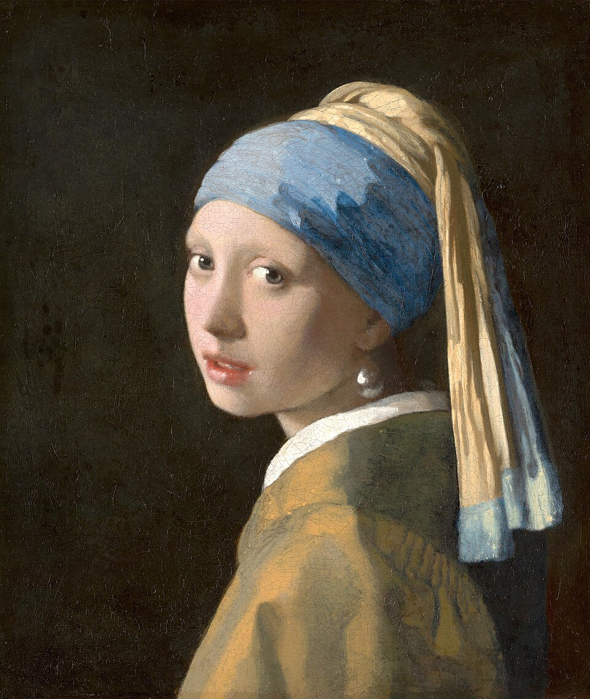
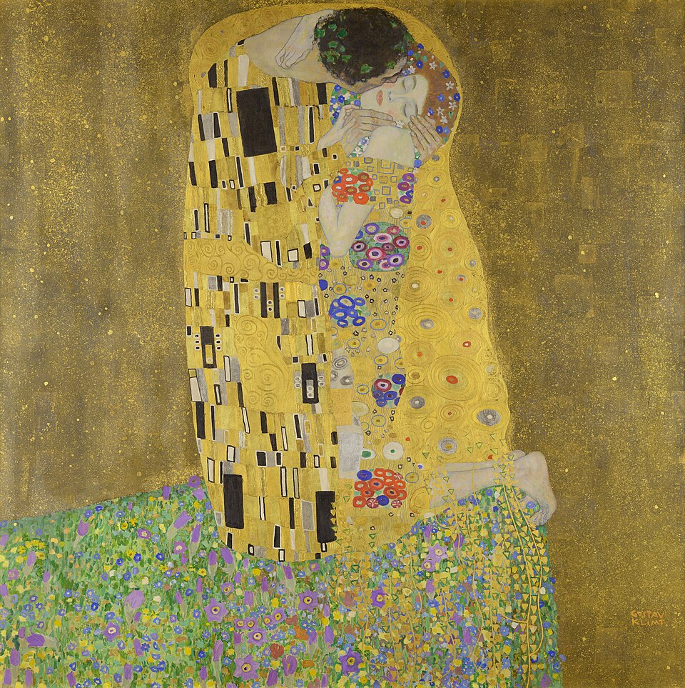
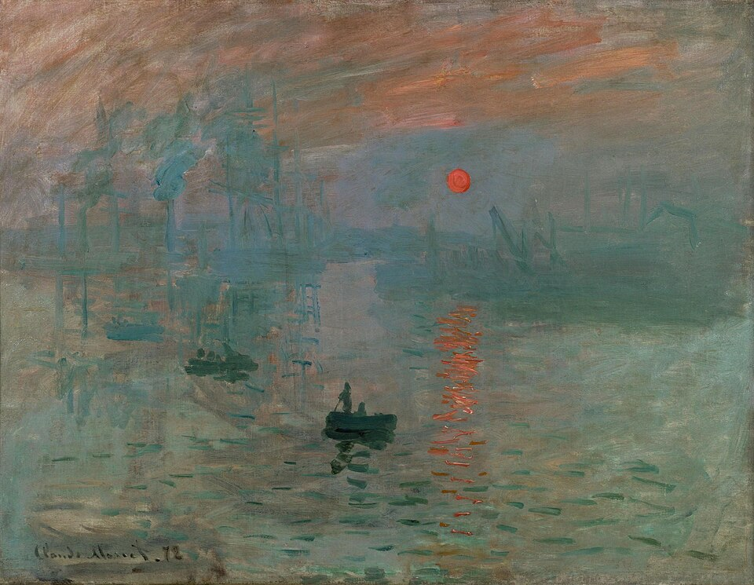
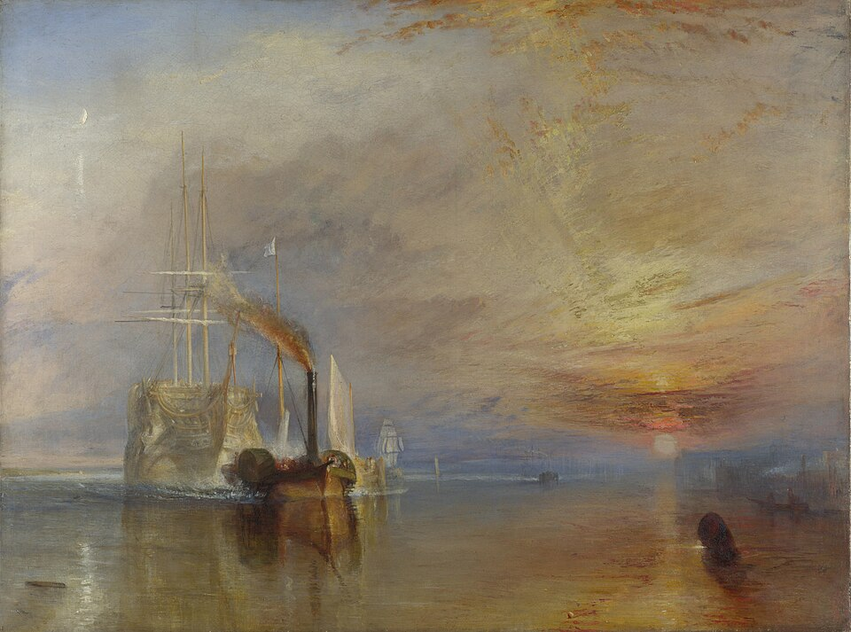
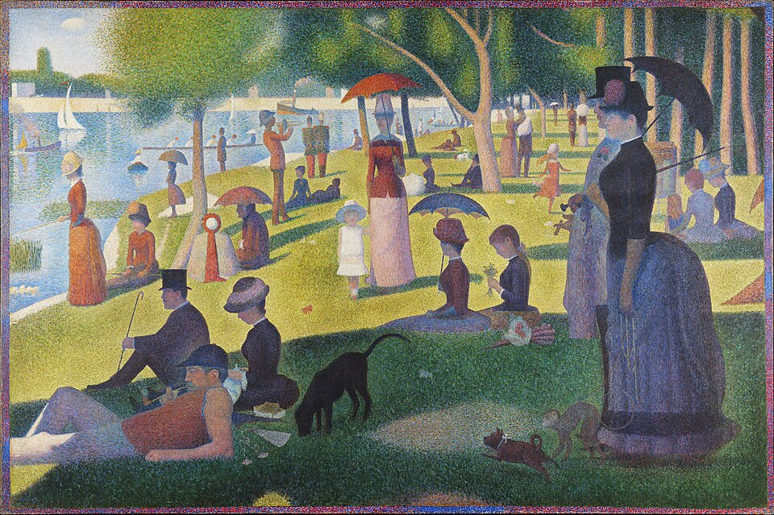

A home screen that feels like walking into your own museum.
ArtLore does one thing better than anything else: you point at a painting and it tells you its story. So the redesign puts that moment first, then lays the rest of the visit out the way a gallery does — the work of the day, your own wall, what you saw last, and where to wander next. It keeps everything that already makes the app yours: Inter, the gold-on-near-black palette, the scanning frame, the photo polaroids, the hanging frames and the lamp navigation.

Every painting
has a story.
Scan a masterpiece and uncover the story behind every brushstroke.




In the gallery today
See all
Artwork of the dayImpression, Sunrise
The harbour at Le Havre in a quarter-hour of mist — the picture that gave a whole movement its name.
Your wall
3 worksRecent scans
1 / 5Wander by movement


Every painting
has a story.
Scan a masterpiece and uncover the story behind every brushstroke.
In the gallery today
See allImpression, Sunrise
The harbour at Le Havre in a quarter-hour of mist — the picture that gave a whole movement its name.
Your wall
3 worksRecent scans
1 / 5Wander by movement
Why this layout suits ArtLore
The viewfinder is the hero
Scanning is the app's reason to exist, so the first thing you see is the live scanning frame — corner brackets, a light passing over a painting — with the shutter right under your thumb. The nav's scan button stays too, so it is reachable from every tab.
In the gallery today
An editorial artwork of the day with a two-minute story and an audio option gives the home screen something new each visit, without asking the visitor to scan anything. It is where ArtLore's storytelling shows up before a scan ever happens.
The wall of saved works
My Collection becomes a wall: up to three frames, newest first, hanging from a rail and swaying gently. It shows what the visitor has made of the app, and the same frames shrink into the quick-action card above.
Recent scans and wandering
Recent scans become a cover-flow deck: the latest scan sits in front, the earlier ones fan out behind it in depth, and each card that comes forward draws its match ring and is briefly re-scanned by the light. Swipe, tap a card, or let it turn by itself. Below it, movement chips and a row of artists open the door to browsing.
Nothing borrowed, nothing lost
Inter throughout, the app's near-black ground with ivory type and gold accents (and the warm-paper light mode), frosted-glass surfaces with a fine edge, the polaroid pair, the gilded hanging frames and the lamp navigation with its docked scan button.
Quiet, physical movement
The scan light sweeps; the painting drifts slowly behind it; frames swing on their wires, each on its own beat; the lamp breathes; polaroids fan out on hover; recent scans fan out as you reach them and turn on their own, each card drawing its match ring as it comes forward. All of it stops with the system's reduced-motion setting.
A camera that reads the wall in front of it.
The old screen was a frame on a blur. This one treats the camera as the start of the story: it looks at a real room, finds the painting at whatever angle you hold the phone, traces it, lifts its colours out, and hands you the answer as a card — all in the app's gold, ivory and frosted glass. Click a step on the left, or let it play; it moves through the four moments of a scan on its own.
The Starry Night
Painted from a barred window at the asylum in Saint-Rémy, just before dawn. The village is invented, the sky is remembered.
A framed viewfinder over a light tray.
Built from the reference layout and changed to suit a painting app: the same simple header and light tray, but no mode tabs. A painting is the only thing it looks for, so the frame is a gallery-proportioned portrait with gold corners and a slow beam, the hint speaks about the canvas, and the shutter is the app's gold. Tap 1× 2× 3× to zoom the picture.
Scan a Painting
The canvas turns while a bar reads it.
Taken from the reference clip: the object spins on a turntable, a bar rides along it, and what the bar has passed becomes readable. Here the object is the painting you just scanned. It arrives edge-on, turns a full turn and three quarters (showing the back of a real canvas on the way), and lands square to you while a gold bar climbs it and the colour floods in below. Then the analysis lands: brushwork is traced, points light up, readouts and the palette appear, and the painting turns away to hand over to the story. It loops.
Comparing with 2,400 masterworks